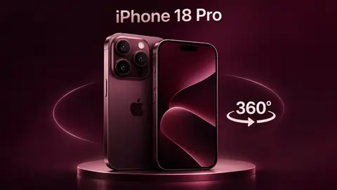

ПОДИВИСЬ БЛИЖЧЕ
iPhone 18 Pro. Усі 360°.
Потягни мишею або проведи пальцем по моделі. Стрілки ← → обертають, ↑ ↓ нахиляють, + / − змінюють масштаб, Home повертає початковий ракурс. E — розібрати, C — зібрати. Натисни на деталь або обери її у списку. Коліщатко миші або жест двома пальцями змінює масштаб.

3D завантажиться лише після натискання. Автоматичного обертання немає.
Деталізований навчальний макет за візуальними референсами. Габаритні пропорції й перелік основних вузлів звірялися з Apple; форма, внутрішнє компонування, оптика та траєкторії розбирання схематичні. Це не сервісне або виробниче креслення.
Презентація iPhone 18 Pro
Apple Event, 9 вересня 2026 року. Презентація iPhone 18 Pro та інших новинок (англійською).